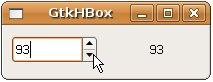
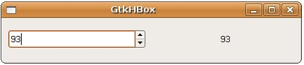
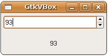

設計視窗程式的人都知道，在視窗程式中最麻煩也最難的就是版面配置，每次都為了元件的位置擺放在傷腦筋，目前為止在 自
訂 callback 函式 看到的範例，，僅曾經單純的將GtkButton置放入GtkContainer之中，GtkButton預設填滿整個視窗，若是有多個元件，元件位置是否會適當的自我調整大小、位置（或像是字型大小自動調整之類的），以配合視窗縮放展現適當的觀感等，這些都是版面配置的議題。
視窗程式的解決方案都會提供一些現成的版面配置方式，讓您可以不必自行配置元件位置，在GTK中，基本版面配置可以透過GtkBox這個Widget來進行，這是個不可視的（Invisible）元件，可以容納其它Widget，其繼承架構關係如下：
GObject
+----GInitiallyUnowned
+----GtkObject
+----GtkWidget
+----GtkContainer
+----GtkBox
+----GtkVBox
+----GtkHBox
+----GtkButtonBox
GtkBox繼承自GtkContainer，有兩個主要子類別GtkVBox與GtkHBox，而GtkButtonBox與前兩者類似，主要是作為按鈕群組版面配置使用。
以下先說明GtkVBox與GtkHBox的使用，基本上兩者使用是相似的，要建立一個GtkHBox，可以如下撰寫：
GtkWidget *hbox = gtk_hbox_new(TRUE, 5);
第一個參數決定GtkHBox中所有的元件是否平均分配空間，第二個參數則設定兩個元件之間的空間，單位是像素（Pixel）。若要將元
件加入GtkHBox中，則要使用gtk_box_pack_start()或gtk_box_pack_end()，前者將元件從GtkHBox的左邊
開始加入（如果是GtkVBox就是從上面），後者則加至右邊（如果是GtkVBox就是從下面），例如：
GtkWidget *spinButton = gtk_spin_button_new_with_range(0.0, 100.0, 1.0);
gtk_box_pack_start(GTK_BOX(hbox), spinButton, TRUE, TRUE, 5);
第一個布林參數設定Widget是否使用所有的可用空間，設定為TRUE時，Widget的可用空間會隨著GtkHBox大小改變而改變（但Widget元件本身不變）。第二個參數只有在第一個參數為TRUE時才有用，可設定Widget是否填滿可用空間，設定為TRUE時，Widget的大小會隨GtkHBox大小改變而改變。
以下直接看例子，使用GtkHBox進行元件的版面配置，您以水平的方式來擺放元件：
#include <gtk/gtk.h>
void value_changed_callback(GtkSpinButton *spinButton, gpointer data) {
gint value = gtk_spin_button_get_value_as_int(spinButton);
GString *text = g_string_new("");
g_string_sprintf(text, "%d", value);
gtk_label_set_text(GTK_LABEL(data), text->str);
}
int main(int argc, char *argv[]) {
GtkWidget *window;
GtkWidget *spinButton;
GtkWidget *label;
GtkWidget *hbox;
gtk_init(&argc, &argv);
window = gtk_window_new(GTK_WINDOW_TOPLEVEL);
gtk_window_set_title(GTK_WINDOW(window), "GtkHBox");
gtk_window_set_default_size(GTK_WINDOW(window), 200, 50);
spinButton = gtk_spin_button_new_with_range(0.0, 100.0, 1.0);
label = gtk_label_new("0");
hbox = gtk_hbox_new(TRUE, 5);
gtk_box_pack_start(GTK_BOX(hbox), spinButton, TRUE, TRUE, 5);
gtk_box_pack_start(GTK_BOX(hbox), label, TRUE, TRUE, 5);
gtk_container_add(GTK_CONTAINER(window), hbox);
g_signal_connect(GTK_OBJECT(spinButton), "value_changed",
G_CALLBACK(value_changed_callback), label);
g_signal_connect(GTK_OBJECT(window), "destroy",
G_CALLBACK(gtk_main_quit), NULL);
gtk_widget_show_all(window);
gtk_main();
return 0;
}
程式中使用到GtkSpinButton與GtkLabel，並作了適當的Signal，讓您可以設定數字並顯示在另一個文字元件上，GtkSpinButton與GtkLabel之後還會介紹，現在請注意粗體字有關版面配置的程式碼即可，一個執行的畫面如下所示：

根據gtk_box_pack_start()的設定，元件會自動填滿視窗，如果您拉動視窗，則當中的元件也會適當的變動大小：

如果使用GtkVBox來改寫上面的範例：
#include <gtk/gtk.h>
void value_changed_callback(GtkSpinButton *spinButton, gpointer data) {
gint value = gtk_spin_button_get_value_as_int(spinButton);
GString *text = g_string_new("");
g_string_sprintf(text, "%d", value);
gtk_label_set_text(GTK_LABEL(data), text->str);
}
int main(int argc, char *argv[]) {
GtkWidget *window;
GtkWidget *spinButton;
GtkWidget *label;
GtkWidget *vbox;
gtk_init(&argc, &argv);
window = gtk_window_new(GTK_WINDOW_TOPLEVEL);
gtk_window_set_title(GTK_WINDOW(window), "GtkVBox");
gtk_window_set_default_size(GTK_WINDOW(window), 200, 50);
spinButton = gtk_spin_button_new_with_range(0.0, 100.0, 1.0);
label = gtk_label_new("0");
vbox = gtk_vbox_new(TRUE, 5);
gtk_box_pack_start(GTK_BOX(vbox), spinButton, TRUE, TRUE, 5);
gtk_box_pack_start(GTK_BOX(vbox), label, TRUE, TRUE, 5);
gtk_container_add(GTK_CONTAINER(window), vbox);
g_signal_connect(GTK_OBJECT(spinButton), "value_changed",
G_CALLBACK(value_changed_callback), label);
g_signal_connect(GTK_OBJECT(window), "destroy",
G_CALLBACK(gtk_main_quit), NULL);
gtk_widget_show_all(window);
gtk_main();
return 0;
}
一個執行畫面如下所示：

|
|